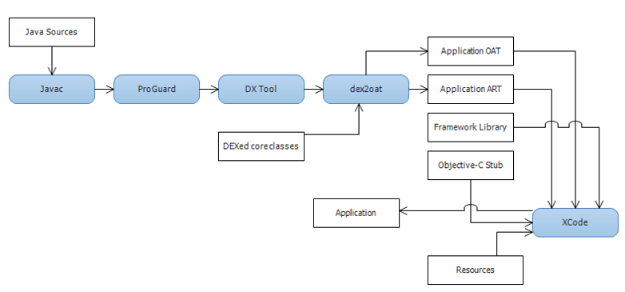

Multi-OS Engine Architecture¶
In this section we will explain how a Multi-OS Engine application works on the iOS system.
The Multi-OS Engine Runtime is an enhanced Android Runtime, based on ART the runtime component of Android to run Java applications on IOS.
ART has just the right properties to provide optimal performance for applications on iOS:
- Ahead Of Time (AOT) compilation, because traditional JIT (Just-In Time Compilation) is not allowed on iOS.
- Uses the same Java runtime libraries as Android. (Simplifying cross-platform application development)
A compiled Multi-OS Engine application contains the compiled java sources, resources, standard (iOS) library bindings, third party native libraries and bindings, Nat/J native library for the Java to native binding (that allows the implementation of native classes and functions in pure Java and makes them available to the native side) and the specialized ART VM with Multi-OS Engine ART Enchancements.
When an iOS application launches, it starts the ART VM and executes the pre-compiled code on it.

Multi-OS Engine build chain is the following:
